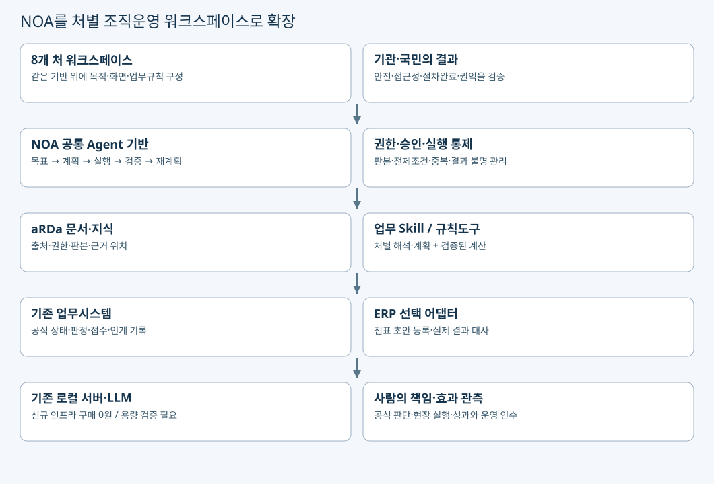

NOA 기반 처별 조직운영 아키텍처
사전기획·설계안 v1.0 · 2026-09-22 · 공고 미매핑 · 운영 시스템이 아닌 검토자료
- NOA 자체를 TS의 처별 업무 워크스페이스로 확장함. aRDa는 문서·지식의 출처와 판본을, 기존 업무시스템·ERP는 공식 처리 결과를 담당함.
- 별도 플랫폼을 중복 구축하지 않음.

| 층 | 역할 | 이번 추가와 재사용 |
|---|---|---|
| 처별 UI | 8개 처의 사건·근거·과업·결과 화면 | 공통 셸 1회 + 처별 내용·규칙·검증 |
| NOA Agent 공통 | 목표·계획·도구·검증·재계획 | 현재 계약 미포함은 사용자 확인. 제품 기존 기능/라이선스는 시연·계약 대조 필요 |
| aRDa | 문서·표·지식의 계보·판본·권한 | 기존 문서처리 재사용; 스캔 OCR/비전 신규 개발 제외 |
| Skill·규칙·분석도구 | 처별 판단 준비 + 정확한 집계·계산 | LLM이 수치·승인·검정의 공식 시스템을 대체하지 않음 |
| 공식 업무시스템 | 접수·검정·인계·판정·결과 | 연계 API·권한 미확인. 부족 시 승인된 수동 인계 |
| ERP 선택 연계 | 비용 증빙→전표 초안 등록→대사 | 자산/예산 원장 대체 아님. 지급·마감 제외 |
| 기존 서버 | 로컬 추론·저장·로그 | 신규 인프라 구매 0원. 성능 검증·기존 운영비는 별도 확인 |
하나의 사건을 이어주는 논리 계약
| 이름(제안) | 최소 내용 |
|---|---|
| DocumentIR | 문서키·판본·문단/표 위치·권한·추출상태 |
| WorkGraph | work_id·목표·완료조건·과업·의존성·현재 상태 |
| EvidenceBundle | 주장·근거·반대근거·미확인·출처·시점 |
| SkillContract | 입출력·허용도구·권한·전제조건·실패·재시도 정책 |
| DecisionTrace | 판단·계획 판본·승인자·승인범위·철회 사유 |
| ChangeEvent | 변경 대상·영향 과업·무효화 승인·재검토 범위 |
- 이는 이번 논리 설계의 계약명임. NOA 현재 제품의 실제 API·데이터 구조 또는 공인 표준으로 확인된 명칭이 아님.
- 착수 시 기존 버전과 매핑하며 없는 기능만 추가함.
데이터·서비스 흐름의 불변 조건
목표 → 근거 수집 → 계획 → 사람의 검토·승인 → 허용 도구 실행 → 공식 결과 조회·대사 → 실질 효과 확인 → 운영 인수.
근거·조건이 바뀌면 영향받는 단계로 돌아가 재계획함.
문서 생성, 승인, 접수, 등록, 업무 완료, 국민 편익은 각각 다른 상태임.
개인 작업공간의 문서·대화·메모는 개인 소유 범위를 유지함.
사용자가 선택한 제출본과 근거만 조직 사건으로 연결하며 전체 개인 공간을 조직 지식으로 복사하지 않음.
제출본의 정정·철회는 이미 사용된 근거의 영향과 보존정책을 확인해 처리함.
사업자료·개인정보는 부서 권한 경계를 유지함.
공통 플랫폼을 사용한다는 이유로 TS 전사·다른 지자체 데이터를 합칠 권한이 생기지 않음.
운영 전환은 모의실행→읽기 병행→권한자가 승인한 제한 인계 순으로 검증함.
기존 범위와 신규 범위 판정
- 제품 설명자료의 기능 / 현재 계약 납품범위 / 이번 추가 수행작업을 각 요구별로 세 칸에 기록함. Agentic OS 미포함은 ‘공통 추가 과업을 검토할 수 있다’는 뜻이며, 제품 기능을 모두 처음부터 개발한다는 뜻은 아님.
- 공통 검색·보고서·연계 기능은 기존 계약과 먼저 대조함.
근거: 조직운영 대화 1, NOA 자체 확장 정정, 기존 계약 경계 문서.